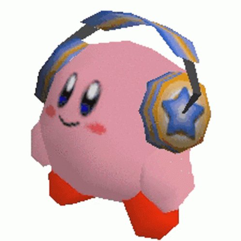
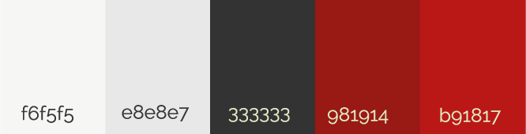

Algunos datos extras del trabajo
- MugiCatt es mi nickname en los videojuegos online, por lo tanto de ahí salió el nombre de la pagina
- La creación base de esta pagina estaba pensada desde antes del curso, ya que siempre he querido programar en html
- Esta pestaña "extra" es para demostrar un pequeño porcentaje más de que aprendí a usar pestañas y listas
- Se ven bordes blancos a los lados de la pagina, esteticamente así lo quería pero pienso que también estarían bien para publicidad
- Mi videojuego favorito es guilty gear strive actualmente, pero desde siempre ha sido la saga de kingdom hearts
- Siempre he querido hacer una pagina de periodismo gamer
Gracias por la atención

Paleta de colores utilizada:
